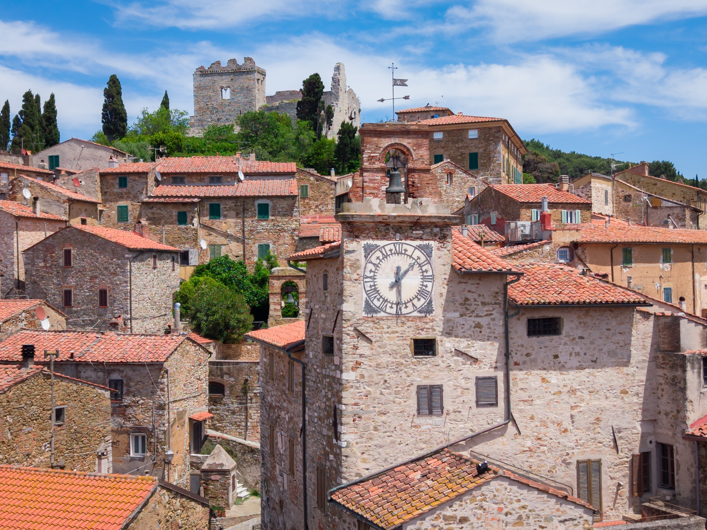
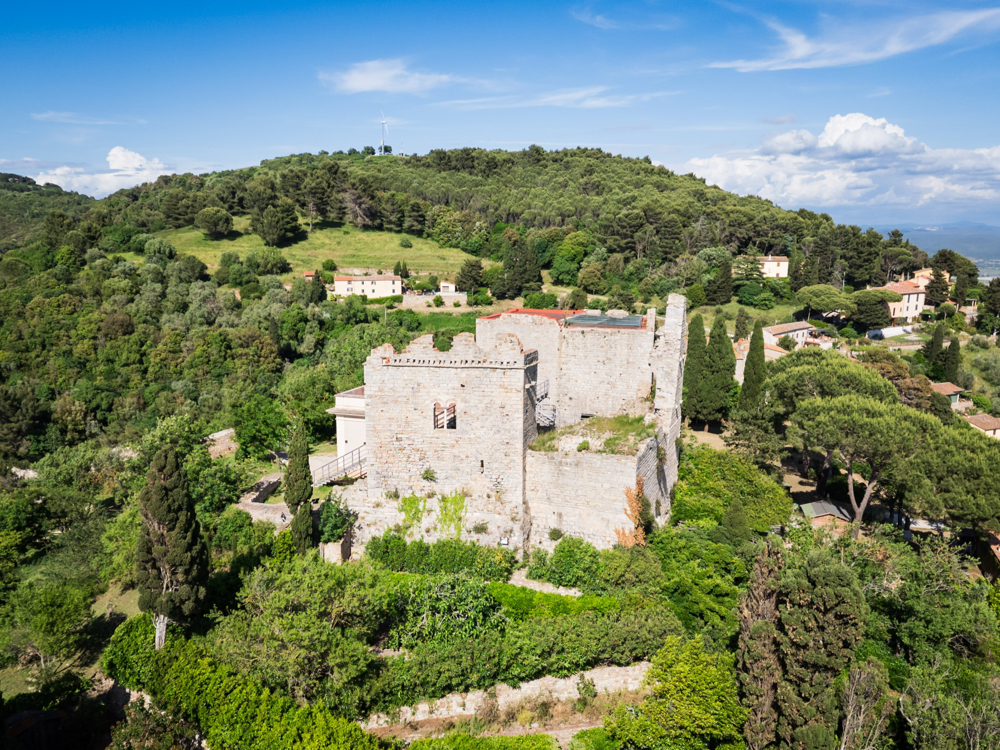
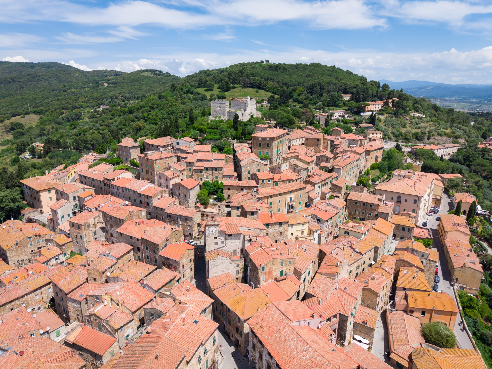
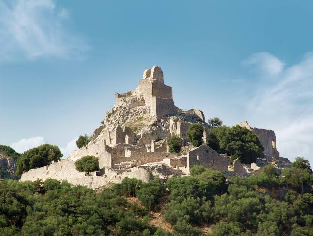
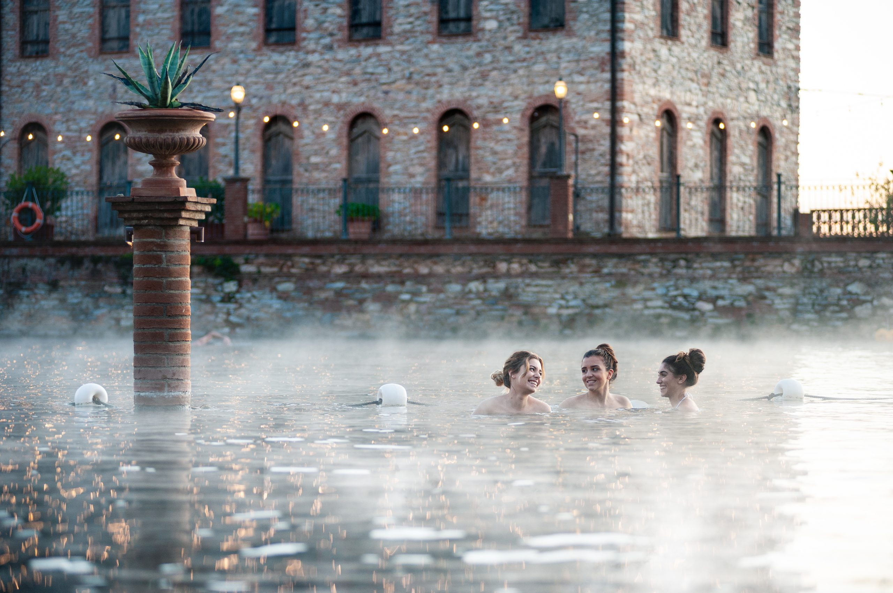
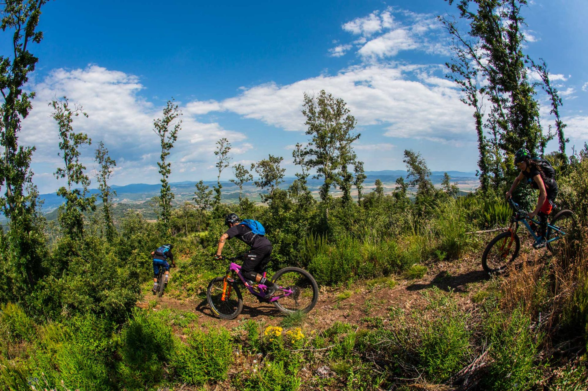

A medieval hilltop borough suspended between sea and hills, at the heart of the Etruscan Coast. Thermal springs, mining archaeology and one of Tuscany's most technical bike areas — this is where the Tuscany Trail calls home.
A typical day: breakfast in the borough, the Rocca and historic centre, a local lunch, then the Thermal Baths or the Parco Archeominerario in the afternoon. Riders: Bike Area Monte Calvi and the trails through the Parco.

Piazza della Repubblica, narrow alleyways and hidden corners. Every August, Apritiborgo — an international theatre festival — turns the streets into an open-air stage.

XII-century fortress commanding the valley, with panoramic views stretching all the way to the Tuscan Archipelago.

A XII-century Romanesque church in local stone, and the 14th-century Palazzo Pretorio with its row of podestà coats of arms carved into the facade.

Copper, lead and silver mines, a medieval mining village and the Miner's Museum. Inside the park: a bike park with cross, enduro and downhill trails.

Natural thermal waters at 36°C and a Silence Area for meditation and nature — just minutes from the borough.

9 enduro trails and 4 cross-country routes across the slopes of Monte Calvi, fully integrated with the Tuscany Trail network.
Book from verified bike-friendly stays in the area — tracked by Cycling in Tuscany.